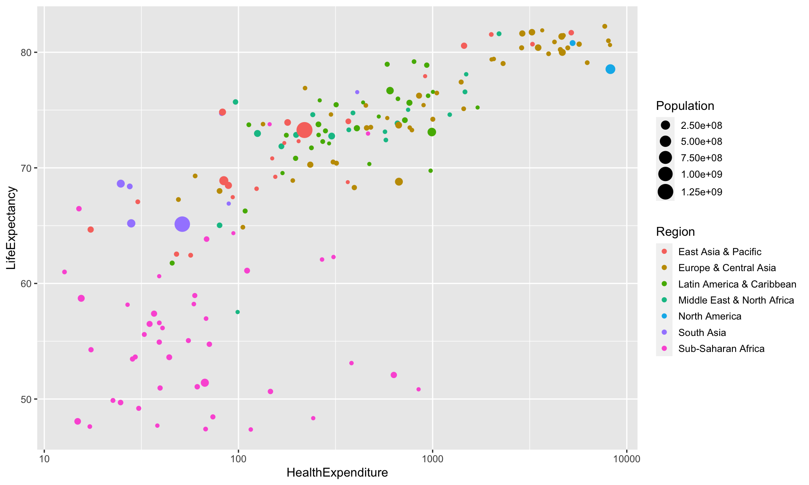
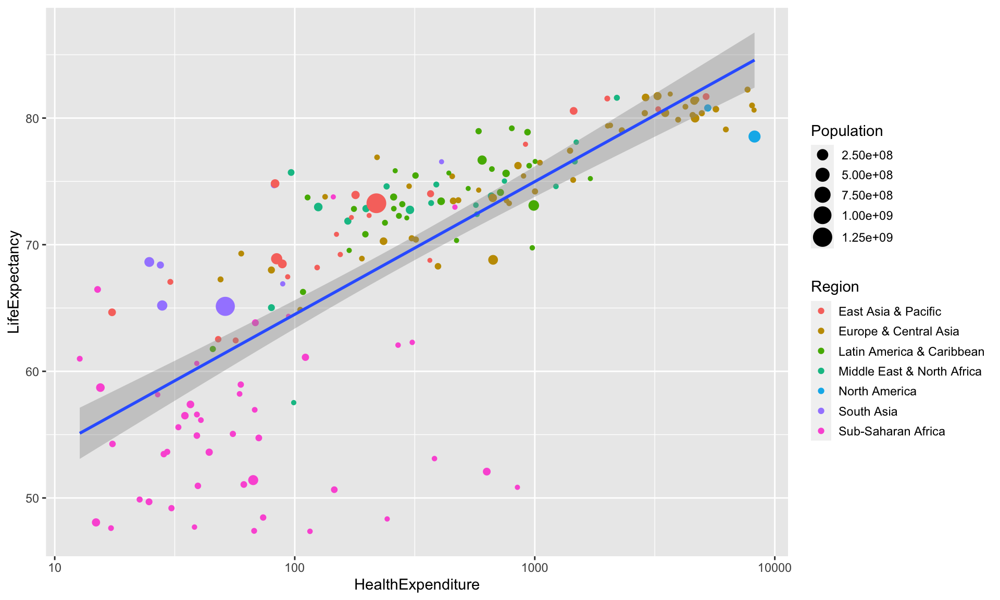

4.2 Using the more general ggplot interface
4.2.1 A typical ggplot call
A plotting command for ggplot consists of a sequence of function calls added together using the standard sum operator +:
ggplot(data=...) + # Specify data source
aes(...) + # Generic aesthetics applying to all layers
geom_<type>(aes(...), ...) + # Geometry for one layer with layers-specific aesthetics
geom_<type>(aes(...), ...) +
... # Further arguments for fine-tuning (themes, scales, facets, ...)geom_<type> objects do not necessarily have to use the same data as specified in the call to ggplot. If the optional argument data is specified, then the data source provided is used for this layer.
For the following example, we will use data on health expenditure by country, reported on an annual basis. We can produce a plot like the following using ggplot commands.
ggplot(data=health) +
aes(x=HealthExpenditure, y=LifeExpectancy) +
geom_point(aes(colour=Region, size=Population)) +
scale_x_log10()
4.2.2 Adding additional layers
Additional layers can simply be added to the plot. For example, we can add an overall regression line with confidence bands using
ggplot(data=health) +
aes(x=HealthExpenditure, y=LifeExpectancy) +
geom_point(aes(colour=Region, size=Population)) +
geom_smooth(method="lm") +
scale_x_log10()## `geom_smooth()` using formula 'y ~ x'
If we want to add a different regression line for each country we have to make sure that a group or colour aesthetic is passed to geom_smooth. We could pass aes(colour=Region) to geom_smooth. Alternatively, we can move colour=Region from the aesthetics specific to geom_point to the generic aesthetics, so that colour=Region now applies to both geom_point and geom_smooth.
ggplot(data=health) +
aes(x=HealthExpenditure, y=LifeExpectancy, colour=Region) +
geom_point(aes(size=Population)) +
geom_smooth(method="lm") +
scale_x_log10()## `geom_smooth()` using formula 'y ~ x'## Warning in qt((1 - level)/2, df): NaNs produced## Warning in max(ids, na.rm = TRUE): no non-missing arguments to max; returning
## -Inf
The warning comes from the fact that there are only two North American countries, so we can fit a line through them with no error, which means we cannot draw confidence bands.
The plot looks slightly messy, we will use facet_wrap later on to split it into separate panels.
Suppose we want to annotate the observations belonging to Australia, the UK, the US.
health2 <- health %>%
filter(Country %in% c("Australia", "United Kingdom", "United States"))
ggplot(data=health) +
aes(x=HealthExpenditure, y=LifeExpectancy, colour=Region) +
geom_point(aes(size=Population)) +
geom_label(data=health2,
aes(x=HealthExpenditure, y=LifeExpectancy, label=Country),
show.legend=FALSE)
The labels however cover the observations and might not be fully visible. This can be avoided by using the function geom_label_repel from ggrepel.
health <- health %>%
mutate(CountryLabel=ifelse(Country%in%c("Australia", "United Kingdom", "United States"),
as.character(Country),""))
library(ggrepel)
ggplot(data=health) +
aes(x=HealthExpenditure, y=LifeExpectancy, colour=Region) +
geom_point(aes(size=Population)) +
geom_label_repel(aes(label=CountryLabel), show.legend=FALSE)
This time, we have used a different approach. Rather than subsetting the data and creating a separate data frame only containing the data for the three countries, we have created a new column in the data frame health, which is blank except for the three countries. This is required because ggrepel layers are only aware of data drawn in their own layer: this way we can avoid the labels covering observations we have not labelled.
4.2.3 Explicit drawing
The standard R plotting functions draw a plot as soon as the plot function is invoked.
Plotting commands in ggplot2 (including qplot) return objects (otherwise the + notation would not work) and only draw the plot when their print or plot methods are invoked. In the console this is the case when they are used without an assignment.
a <- ggplot(data=health) + # Does not draw anything
aes(x=HealthExpenditure, y=LifeExpectancy) +
geom_point()
b <- a + scale_x_log10() # Does not draw anything either
a # Now the plot stored in a gets drawn
print(a) # Draw a again (explicit invocation)
b # Now the plot stored in b gets drawnInside loops and functions the print or plot methods need to be invoked explicitly by using the methods print or plot.
4.2.4 Task
Consider two vectors x and y created using
n <- 1e3
x <- runif(n, 0, 2*pi) # x is random uniform from (0,2*pi)
# x <- sort(x) # Sorting of x _not_ needed for ggplot
y <- sin(x) # Set y to the sine of x
y.noisy <- y + .25 * rnorm(n) # Create noisy version of yUse ggplot2 to create a scatterplot of y.noisy against x, which also shows the noise-free sine curve in y.
4.2.5 Answer
We can use the following R code:
ggplot() + # No need to use data=... as x, y and y.noisy
# are variables in the workspace and not columns
# in a dataset
geom_point(aes(x, y.noisy)) +
geom_line(aes(x, y))
It does not matter whether geom_point or geom_line comes first. ggplot2 adapts the axes so that all objects drawn fit (and not just the first one as is the case when using standard R plotting functions plot and points).